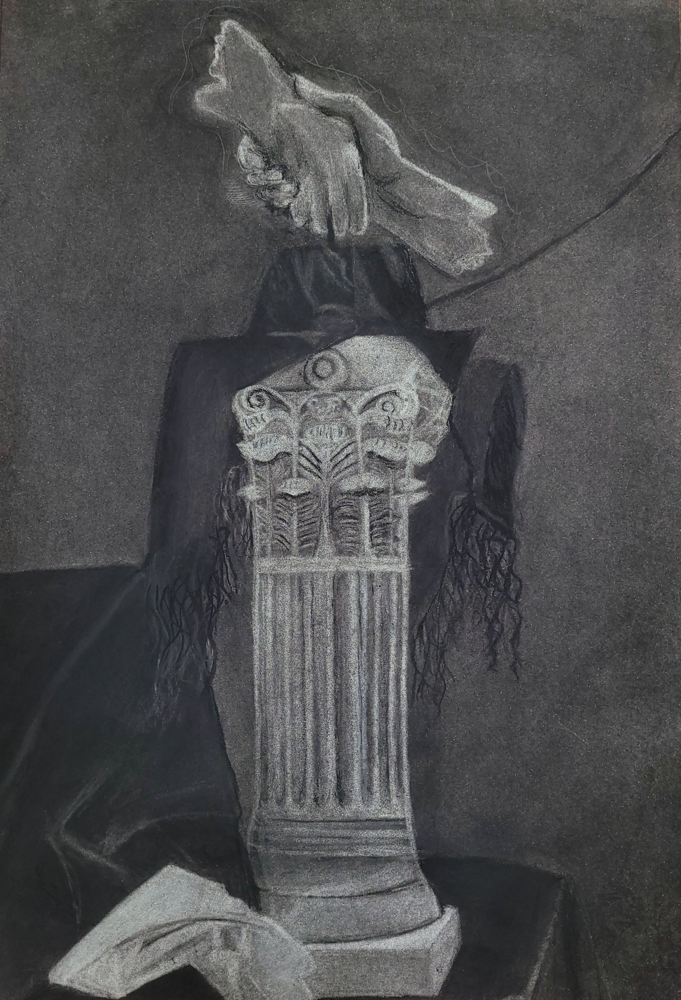
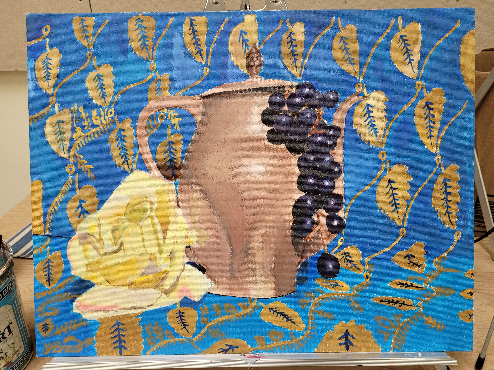
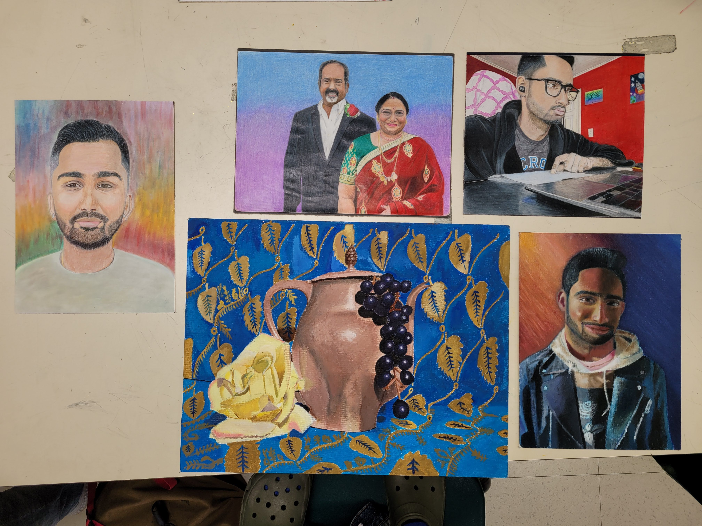
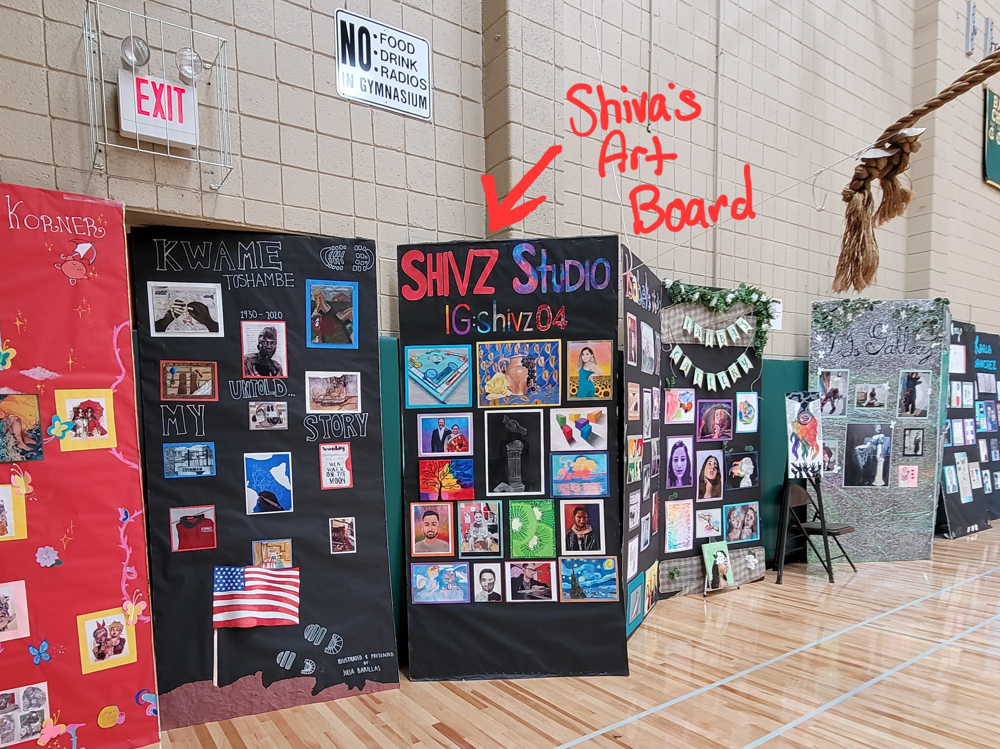
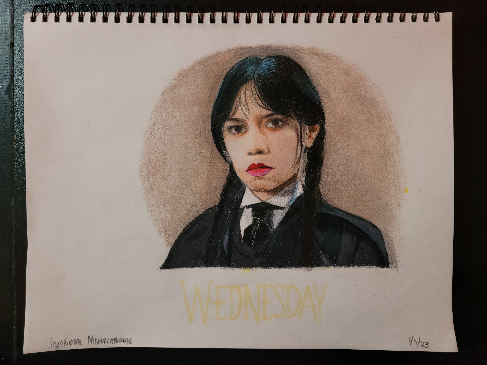
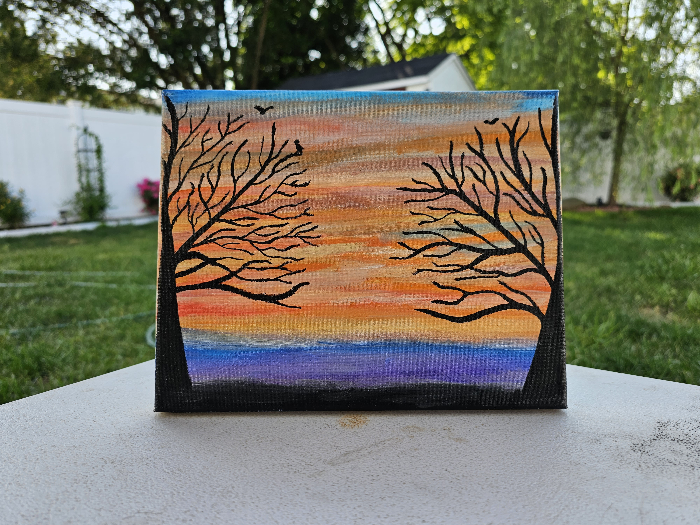

Charcoal Statue:
In Pre and AP Art, Shiva would work on his Sustained Investigation through drawing many artworks, reflecting about his personal life, and how his personality, culture, emotions, and values shapes him to the person he is. He used prisma-color pencils and occasional painting, to get the work done.
One of the more interesting pieces done, Shiva was tasked to create a Charcoal-only drawing for Pre-AP Art, but secretly planned to use it for his Investigation.
Using the said item, Shiva got messy and worked through the drawing, taking him through November '21 to finish.
He chose the statue, as it symbolized that things he cared for, especially his family and friends, will always be heavily prioritized and grasped onto.
In the end, Shiva liked the results with good detail throughout, but believed the background could've been more focused upon, along with slightly more detail.


Acrylic Complementary Painting and 5 Piece Picks:
Started in November 2021, Finished in January 2022 in both Pre and AP Art.
The acrylic painting used complementary colors to create a still-life painting.
This piece focused on his cultural side, such as the teapot, food, background, and subtle nature elements.
Upon completion, Shiva would find his painting displayed at an Art Show in Feb 2022.
After 8 grueling and hand-tiring, yet hard-working, creative, and peaceful months, Shiva submitted his AP Art Portfolio in May 2022.
This would be comprised of 15 pieces, and 5 of them, being Physical Drawings to be sent for grading.
The physicals were some of his favorites, including familial portraits. He also sent an oil and acrylic paintings.

Shiva's Art Board:
Although he would struggle and make mistakes, Shiva used the errors and constructive criticism to fuel his artwork and growth.
Some of his best pieces were self and family portraits, an oil and acrylic painting, and other stunning pieces of art.
This all paid off when Shiva got a 4 on his AP Art Exam, something he did not expect and was proud for.
In May 2022, right after submitting his AP Art project, Shiva created a big board to showcase his art at his school's Art Show.
Using print-outs of his 5 AP Art Portfolio Pieces, along with artwork he still had, Shiva worked to piece everything, showcasing his passion and growth through the years.
When put at the show, Shiva couldn't help, but pat himself for all the work, dedication, and love he gave to Art, and be thankful for the support from his loved ones and teachers.
Eventually, he would learn of his score in AP Art, being a 4 out of 5.


The Final Pieces:
Shiva was happy sent out a decked-out board of his art, to be displayed at his school's art show.
As it stood tall, Shiva was proud of all the hard work he accomplished and thankful for the support from his teachers and family!
Between Senior Year and Mid 2023, Shiva churned out some of his final few drawings.
This came due to a burnout from drawing, and shifting priorities to college and other endeavors, such as coding and I.T.
Links to this stage of drawing
How To Draw~Basics of Charcoal Drawings for Beginners.Drawing Michael Jackson
Shiva never knows if he'll return, but he does want to thank everyone for visiting his art journey and hope others continue their passion for arts and crafts!